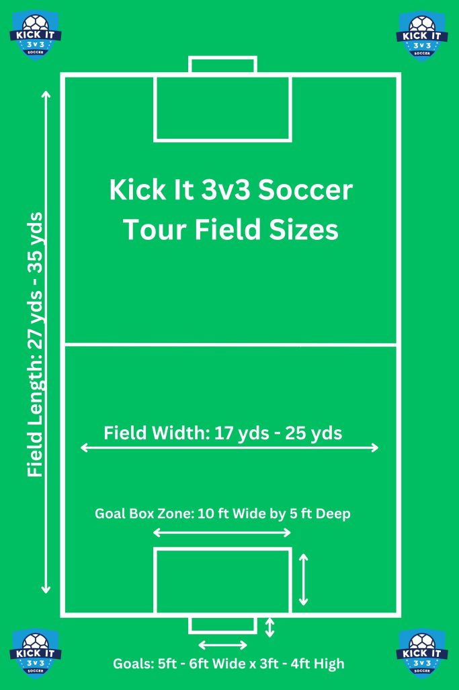

What Is Small-Sided Soccer?
Small-sided soccer is any competitive match with fewer than 11 players per team—typically 3v3 to 8v8—played on a smaller field with smaller goals. The tighter space speeds up the game and encourages constant involvement from every player.
It's great for kids who are learning and adults who want to refine skills, because the changing situations force quick thinking and adaptable play. Players get far more touches than in full-size games, which accelerates improvement in ball mastery, confidence, and decision-making.
Core Benefits at a Glance
- More touches and repetitions per player
- Faster decisions in tight spaces
- Inclusive, easy-to-organize games
How to Start Your First Game (3v3)
- Pick a format (3v3 or 4v4) and set a ~20-30 m x 15-20 m field.
- Use small goals or cones; play two halves (e.g., 2 x 7 minutes).
- Basic rules: kick-ins instead of throw-ins; no goalkeepers (optional); quick restarts.
Sample 3v3 Field Layout
This layout shows a recommended field size, how to keep width, and where to restart quickly to keep the game moving.